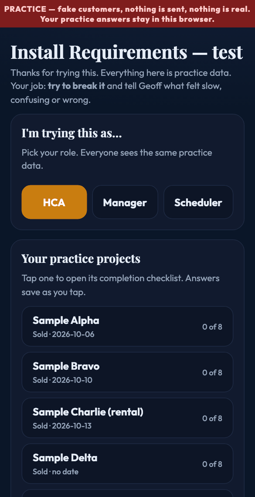
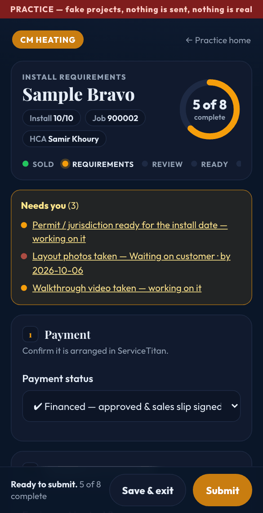
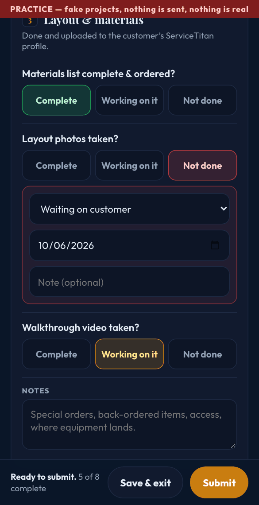
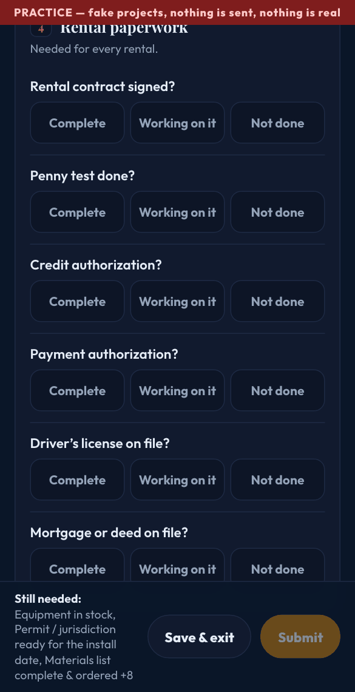
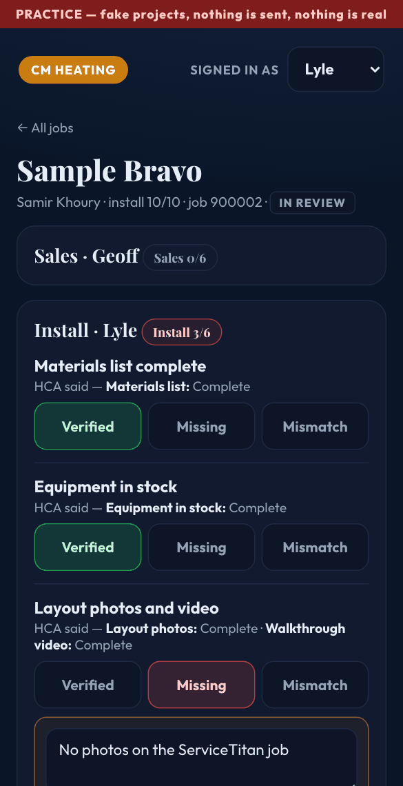
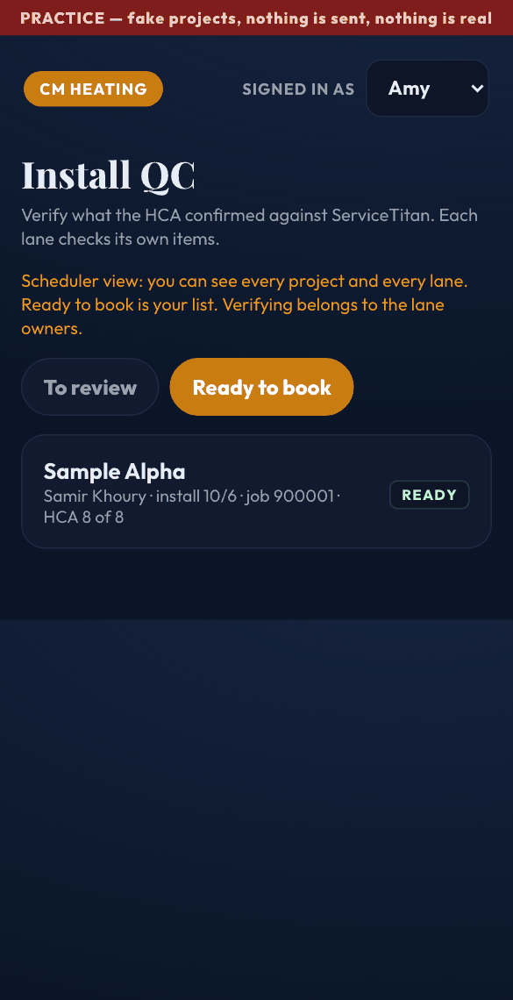
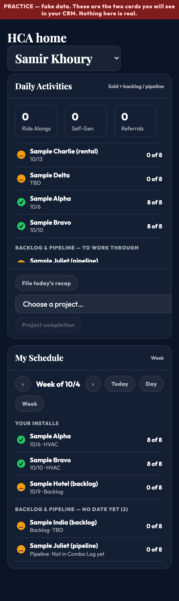

One simple idea: the person who sold the job confirms everything is arranged, the managers check it against ServiceTitan, and Amy books only jobs that are fully ready.
Try it yourself (practice, fake data)Nothing is sent or booked in practice mode. Everything you tap stays in your own browser, so you cannot hurt anything.
After you sell a job, open Project completion, pick the project, and run down the checklist. It takes a couple of minutes. You can come back as many times as you like.

Complete it is done and in ServiceTitan. Working on it you have started. Not done it is blocked: tell us why and by when, and that is all we need.


Pick a rental payment and six extra rental items appear: contract, penny test, credit and payment authorization, driver's license, and mortgage or deed.

Tap Save & exit, say what is holding it up (HOA, financing, a date to firm up) and when you expect to wrap it up. Everything you entered is kept for when you come back.
Tap Submit. The managers are asked to verify. If they find something missing, it shows up at the top of your project under "Needs you" with what they found and the date.
You each verify your own lane. Open the review queue, pick a project, and for each item compare what the HCA said with what is in ServiceTitan.

Sales (Geoff) financing, discounts, rebate, AHRI match, sales slip, authorizations. Install (Lyle) materials, equipment, layout photos and video, install labor, sizing, permit. Electrical (Jon) panel, disconnect, outlet, electrical labor.
Your list is Ready to book: projects where the HCA is complete and all three lanes are confirmed. If it is not on that list, something is still open, and you can open the project to see exactly what and by when.

One screen over every project and every HCA. The tiles at the top are filters: Ready to book, In review, With HCAs, Not started, Install within 3 days but not ready, and Overdue items. Tap a project to see what is open and by when, what the HCA said, and the history.
On your CRM home, Daily Activities lists your projects with a dot and "5 of 10"; My Schedule shows them on their install days, plus your backlog and pipeline jobs that still need dates. The Project completion button stays grey until you choose a project.

The dots also have a symbol, so they work if you are colour-blind: ✓ complete, … in progress, ! needs attention.
No. No email, no text, no changes to ServiceTitan, the Combo Log or any sheet. It is all pretend.
Only into your own browser on that device. It is not shared, and you can start over any time with "Reset practice data" on the practice page.
Each device keeps its own practice data. Use one device for both the HCA and manager screens when you test the whole flow.
Not yet. This is a practice version so everyone can try it and tell us what to change before it goes live in the CRM.
Anything that felt slow, confusing, or wrong. Especially: wording you did not understand, anything hard to tap, and anything you would skip doing in real life.